Handwire Tutorial
Required Materials
♪ Key Switches ♪
♪ Wire ♪
♪ Diodes ♪
♪ Microcontroller ♪
♪ Solder ♪
♪ Soldering Iron ♪
♪ Wire Cutter ♪
♪ Wire Crimper? ♪
Instructions
My instructions are vague and unclear, until i polish them up please are now complete, but for someone else's instructions, follow: this lovely guide!
also note: don't follow this guide if you want a pretty handwire, mine just work~ thats it!
> First, put in your switches! im assuming you already have a case of some kind if you are following a handwiring guide. if not, what are you doing here? go find a project log silly
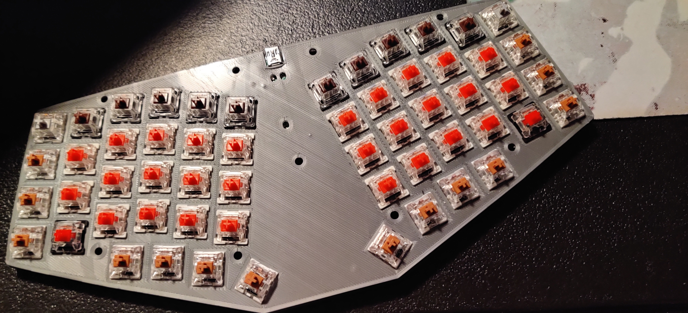

> Next, you'll need to prepare your diodes, some people prepare all of theirs in advance, i do one at a time! all i do is bend it in a circle with my finger, and then cut off the extra with wire cutter, and then bend the other side towards the left or right depending on what side of my keyboard i am working on, dont worry if that doesn't make sense, just put it the way that needs to connect. also make sure to make the circle on the side that doesn't have the band, otherwise it wont work. there is a small gray band on the left side of my diode, like shown in the pictures:
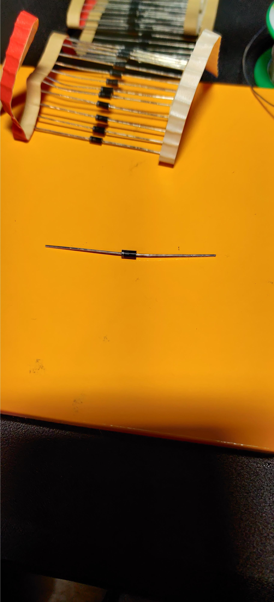 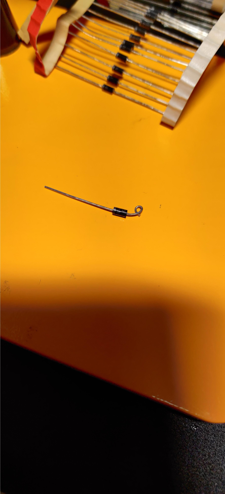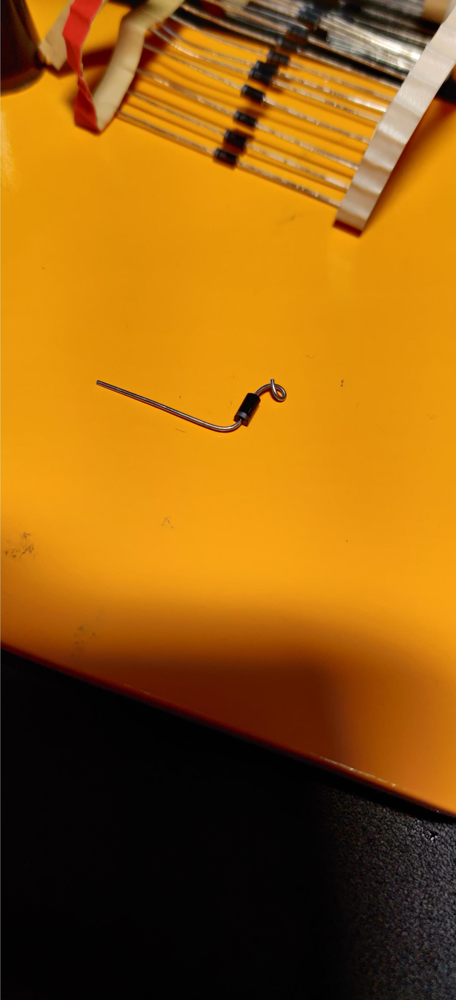
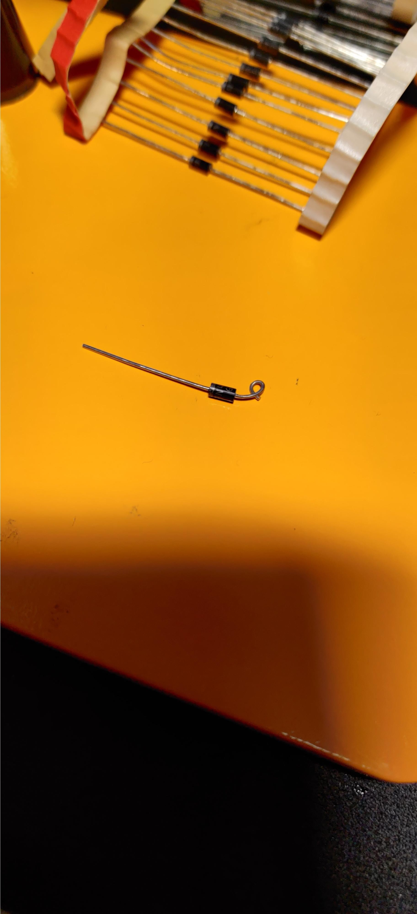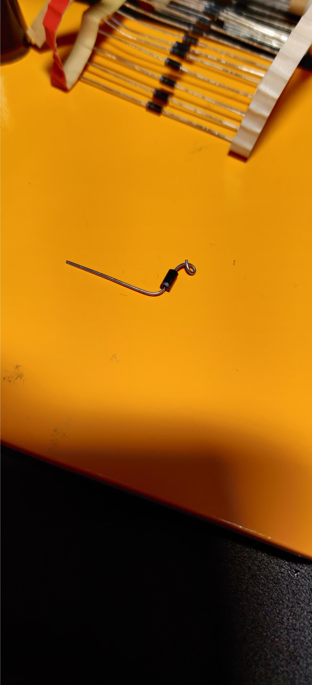
> Now, just put the diode on the one of the pins of the switch, this will be for the rows. to my knowledge it doesn't matter which one, but i always but it on the left side (looking from the bottom). so solder the diode to the switch, and then i bend the first sticking out ending upwards. next repeat this process but then solder the sticking out end to the sticking out end of the first diode. you could use a wire to connect them all, but that would take longer and the columns will be wired anyway so its okay. though i do show part of a wire attachement because this case has a large gap, as shown:
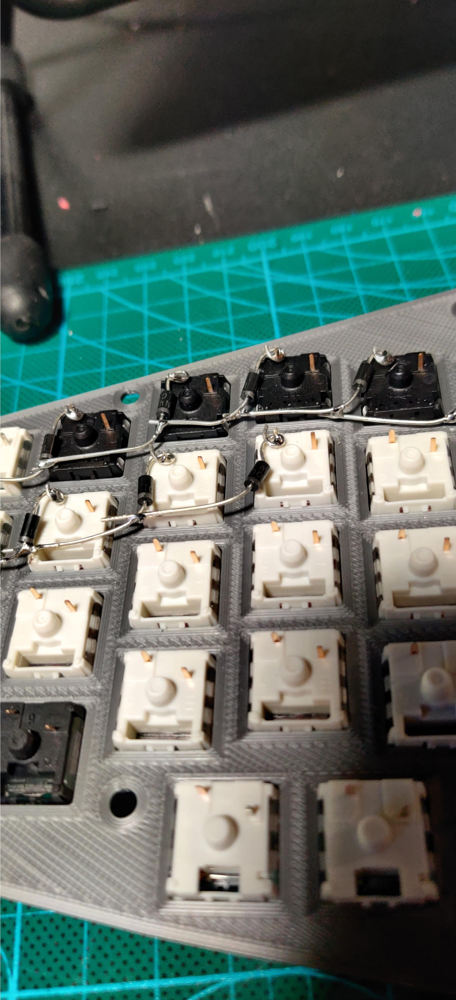
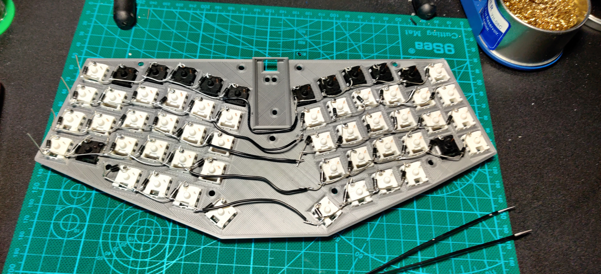
> Next, the rows! i always thought this step would be the hardest one but it always seems to go very well for me and take very little time. you need to approximate alot in this step (you could measure it but please that would take so long) so approximate the length of the column, better to have extra than too little, and use the tool (i think its called a wire crimper? its pictured in the left most picture) to make sections of wire open, at about lengths of each keyswitch apart, better to be longer than shorter cuz you can bend it! picturesss:

 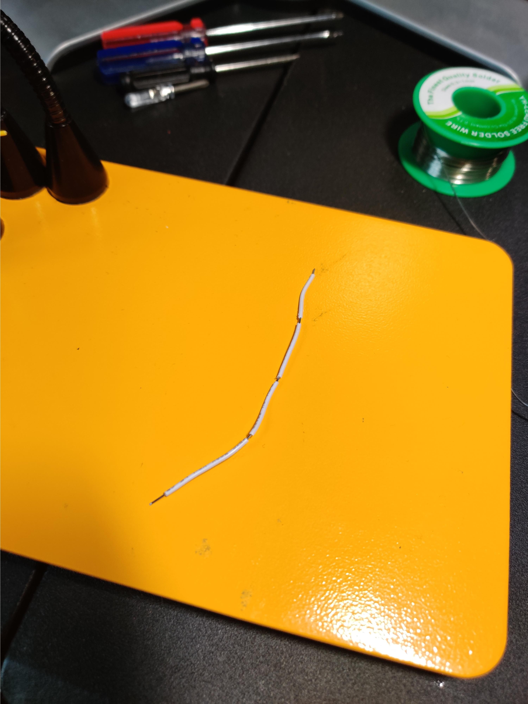
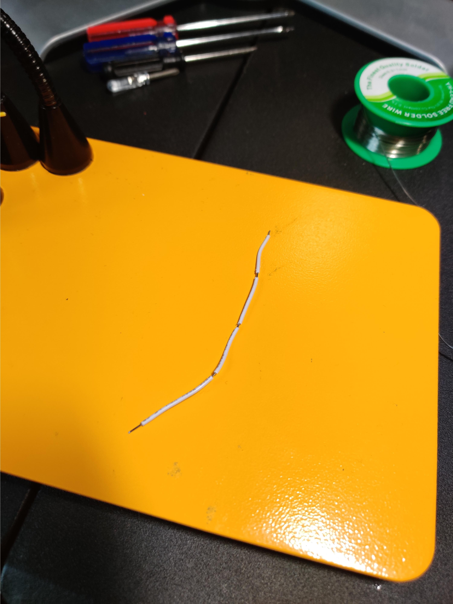
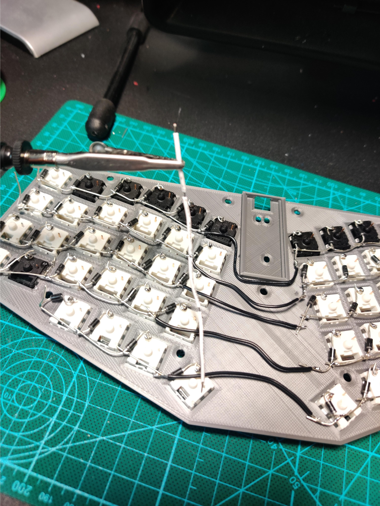

All that is left is the microcontroller, in this case a teensy, but as long as you follow the proper pins from the firmware tutorial, you'll be fine. just solder wires to the microcontroller, with estimated lengths, then attach the rows and columns as decided in the firmware, pics (including example pin arrangement):
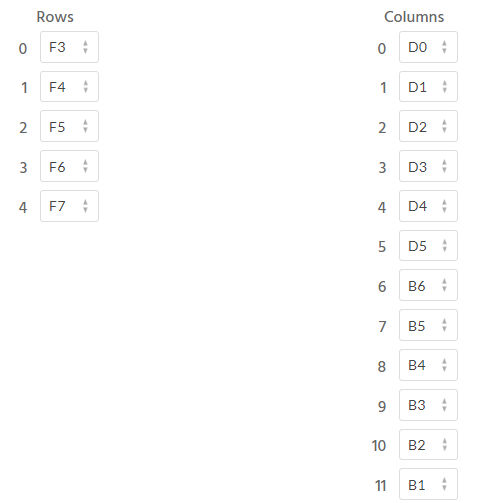
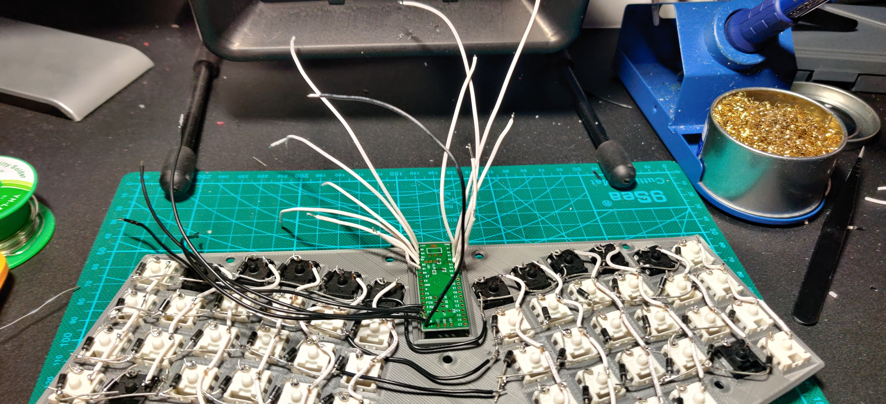


> That's all! Hopefully this helped somebody, please leave a note in the guestbook or contact me with any questions, ill add any details people need. unfortunately i did not have the screws needed for this case, and i had some caps i wanted to get rid of, so i called it fail and probably wont ever use it, but the final product is there: